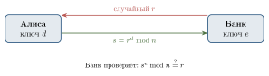
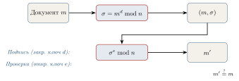

Применения RSA: аутентификация, цифровая подпись, электронное голосование
В предыдущем параграфе мы научились с помощью RSA передавать секретное сообщение. На первый взгляд кажется, что этого уже достаточно для всех задач сетевой безопасности. Однако в действительности шифрование решает лишь одну из проблем — конфиденциальность. Помимо неё, в современных системах необходимо обеспечивать ещё как минимум три:
Аутентификацию — уверенность, что вы общаетесь именно с тем, за кого себя выдаёт собеседник.
Целостность — уверенность, что сообщение не было незаметно изменено по дороге.
Неотказуемость — невозможность для отправителя впоследствии отказаться от своего сообщения («это не я отправлял»).
Удивительно, но все эти задачи можно решить с помощью той же самой схемы RSA, если применить её не «прямо», а наоборот — сначала закрытым ключом, а потом открытым. Об этом и пойдёт речь в этом параграфе.
Аутентификация: «докажи, что это ты»
Представим типичную ситуацию: Алиса заходит в свой личный кабинет на сайте банка. Банк хочет убедиться, что это действительно его клиентка, а не злоумышленник, подсмотревший пароль.
Самый простой подход — запросить пароль. Но у него есть очевидные недостатки: пароль можно подсмотреть, перехватить, угадать, заставить пользователя его выдать. Кроме того, чтобы проверить пароль, банк должен хранить его (или его хеш — см. §4.5) у себя на серверах. А значит, при взломе сервера утечёт сразу множество паролей.
Криптография позволяет построить намного более изящную схему, в которой секрет вообще никогда не передаётся по сети.
Сторона A должна доказать стороне B, что обладает неким секретом, не выдавая никакой информации о самом секрете. Идея, кажущаяся парадоксальной, на практике вполне реализуема и лежит в основе многих криптографических протоколов.
Простейший пример — протокол challenge-response («запрос–ответ») на базе RSA. Пусть у Алисы заведена пара ключей: открытый (e, n) опубликован в системе банка, а закрытый d хранится только у неё (например, в специальном USB-токене или в защищённом хранилище смартфона).
Запрос (challenge). Банк генерирует случайное число r (0 < r < n), запоминает его и отсылает Алисе.
Ответ (response). Алиса вычисляет s = r^{d} \bmod n, используя свой закрытый ключ, и отправляет s обратно.
Проверка. Банк вычисляет r' = s^{e} \bmod n и сравнивает с тем r, которое он отсылал. Если r' = r, проверка пройдена.
Почему это работает? В предыдущем параграфе мы доказали, что для любого r выполняется
(r^{d})^{e} \equiv r \pmod n.
То есть только тот, кто знает d, может «правильно» преобразовать r так, чтобы после открытого преобразования \cdot^{e} получилось снова r. Любой другой пользователь, не знающий d, может лишь угадывать ответ — а вероятность угадать одно нужное число из миллиарда миллиардов исчезающе мала.
Почему это безопасно?
Алиса не передаёт свой закрытый ключ d — он остаётся у неё.
Каждый раз r случайное и новое. Поэтому даже если злоумышленник перехватит весь сеанс и услышит пару (r, s), в следующий раз банк пришлёт другое r, и старый ответ s не подойдёт. Атака повторного воспроизведения (replay attack) исключена.
Банк не хранит секретов клиента: у него лишь открытый ключ, утечка которого ничем не страшна.
Описанная схема передаёт идею challenge-response, но не является полноценным протоколом с нулевым разглашением. В реальных системах нельзя позволять кому угодно получать r^{d} \bmod n для произвольного r: устройство фактически превращается в «оракул» RSA-подписи. Поэтому на практике запрос специально кодируют, а ключи для подписи и аутентификации разделяют.
Схему этого протокола в графическом виде даёт рис. 4.13.

В современных смартфонах закрытый ключ d хранится в специальном чипе — защищённом анклаве (Secure Enclave у Apple, Trusted Execution Environment на Android). Этот чип физически не позволяет считать закрытый ключ извне. На него можно лишь «передать» число и попросить выполнить с ним операцию \cdot^d \bmod n. Так устроены, например, биометрические разблокировки — отпечаток пальца «разрешает» чипу применить ключ, но не извлекает его.
Электронная цифровая подпись
Аутентификация решает задачу «докажи, что ты — это ты». Теперь рассмотрим родственную, но другую: «докажи, что именно ты отправил именно это сообщение». Эта задача стоит особенно остро при подписании документов: договоров, заявлений, налоговых деклараций.
Бумажная подпись от руки выполняет сразу две функции: идентифицирует автора и связывает его с конкретным документом. К сожалению, при простом копировании в электронном виде это свойство теряется: цифровое изображение подписи легко вырезать и приклеить к любому документу. Нужна принципиально иная конструкция.
Электронная цифровая подпись (ЭЦП) — это короткий блок данных \sigma, привязываемый к документу m, обладающий двумя свойствами:
только владелец секретного ключа может сгенерировать \sigma для произвольного m;
любой желающий, зная открытый ключ, может проверить, что \sigma действительно соответствует m и подписан данным владельцем.
Идея конструкции на основе RSA удивительно проста и красива: достаточно поменять местами роли ключей в шифровании.
Алиса имеет открытый ключ (e, n) и закрытый d. Хочет подписать документ m (0 < m < n).
Подпись. Алиса вычисляет
\sigma = m^{d} \bmod n
и публикует пару (m, \sigma).
Проверка. Любой проверяющий вычисляет m' = \sigma^{e} \bmod n и сравнивает с m. Если m' = m, подпись подлинна.
Почему это подпись? По тому же самому соотношению (m^{d})^{e} \equiv m \pmod n. Только владелец закрытого ключа d может построить такое \sigma, что после возведения в степень e получится исходное m. Если бы это умел кто-то другой, он, по сути, умел бы разлагать n на множители — а это, как мы обсуждали, считается практически невыполнимой задачей.
Привязка к документу. В отличие от рукописной подписи, ЭЦП зависит от содержимого: если изменить хоть один бит в m, изменится и \sigma. Невозможно «отделить» подпись от документа и приклеить её к другому: для другого документа потребуется заново вычислять \cdot^{d} \bmod n, что без d невыполнимо (рис. 4.14).

Проблема большого документа. В реальности документ может быть огромным (например, несколько мегабайт). Возводить миллион байтов в степень d по модулю n слишком медленно. Поэтому в практических системах поступают иначе:
вычисляют хеш (короткий «отпечаток») документа: h = H(m) — небольшое число, скажем, длиной в 256 бит;
подписывают именно хеш: \sigma = h^{d} \bmod n.
При проверке вычисляют h' = H(m) заново и сравнивают \sigma^{e} \bmod n с h'. О хеш-функциях и их математическом устройстве пойдёт речь в §4.5.
Здесь показано лишь математическое ядро RSA-подписи. В реальных стандартах подписывают не «голый» хеш, а специально закодированное значение: применяются схемы дополнения (padding) вроде RSASSA-PSS или RSASSA-PKCS1-v1_5. Без такого кодирования «наивная» подпись \sigma = h^{d} \bmod n уязвима для ряда атак.
В Российской Федерации электронная цифровая подпись юридически приравнена к собственноручной с 2002 года (закон № 1-ФЗ «Об электронной цифровой подписи», заменён в 2011 году на № 63-ФЗ «Об электронной подписи»). С помощью ЭЦП сегодня сдают налоговую отчётность, регистрируют недвижимость, участвуют в государственных закупках — всё это без бумажных носителей. Криптографические алгоритмы, используемые в российских ЭЦП, описаны в стандарте ГОСТ Р 34.10–2012; математически они близки к описанной RSA-схеме, но используют не модулярное возведение в степень, а операции на так называемых эллиптических кривых.
Электронное голосование
С распространением Интернета возникает естественный вопрос: можно ли перевести голосование — например, выборы или опросы — в цифровой формат? На первый взгляд, это просто: создать сайт, попросить каждого выбрать вариант, посчитать голоса. На деле возникает несколько противоречивых требований, и решить их одновременно — содержательная криптографическая задача.
Хорошая система электронного голосования должна одновременно обеспечивать:
Корректность: каждый имеющий право проголосовать голосует не более одного раза.
Анонимность: никто, включая организаторов, не может сопоставить конкретного избирателя с его голосом.
Проверяемость: избиратель может убедиться, что его голос учтён, а наблюдатели — что общий подсчёт верен.
Неподдельность: никто не может вбросить «лишние» голоса.
Заметим противоречие между пунктами 1 и 2: чтобы убедиться, что Алиса голосует не дважды, надо как-то её опознать; но если её опознали, как сохранить анонимность? На бумажных выборах эта задача решается физически (список явки и тайная урна разделены), а в цифровом мире — математически. Ключевой инструмент — слепая цифровая подпись, предложенная Дэвидом Чаумом ещё в 1982 году.
Слепая подпись. Идея слепой подписи: можно подписать документ, не зная его содержания. Этот странный, казалось бы, инструмент имеет естественный аналог в офлайне.
Представьте: вы кладёте лист бумаги в конверт, внутри которого вложена копирка. Затем просите начальника поставить подпись на конверте. Подпись через копирку переходит и на лист внутри. Раскрыв конверт, вы получаете подписанный документ, причём начальник никогда не видел его содержания.
Слепая RSA-подпись — это математическая реализация той же идеи: «копирка» — модулярное умножение на случайный множитель.
Формально схема устроена так. Пусть у центра голосования есть RSA-ключи (e, n) (открытый) и d (закрытый).
Алиса хочет получить подпись центра под её бюллетенем m, не раскрывая центру содержимое.
Алиса выбирает случайное k, взаимно простое с n, и вычисляет ослеплённое сообщение
m' = m \cdot k^{e} \bmod n.
Отправляет m' центру.
Центр (после проверки, что Алиса действительно имеет право голоса) ставит подпись:
\sigma' = (m')^{d} \bmod n = m^{d} \cdot k^{ed} \bmod n = m^{d} \cdot k \bmod n.
Возвращает \sigma' Алисе.
Алиса снимает ослепление: вычисляет
\sigma = \sigma' \cdot k^{-1} \bmod n = m^{d} \bmod n.
Получена настоящая RSA-подпись центра под её бюллетенем m, хотя центр никогда не видел m.
Где здесь теория чисел. Заметим, что на шаге 3 Алиса делит на k, точнее — умножает на k^{-1} \bmod n. Существование обратного по модулю n обеспечивается тем, что \gcd(k, n) = 1, и его можно эффективно вычислить расширенным алгоритмом Евклида (§4.1). Кроме того, в выкладке использовалось k^{ed} \equiv k \pmod n — следствие малой теоремы Ферма (точнее, её обобщения — теоремы Эйлера, гласящей, что k^{\varphi(n)} \equiv 1 \pmod n для \gcd(k, n) = 1).
Сам протокол голосования. На базе слепой подписи строится следующая схема (в упрощённом виде; подробности — в книге Музыкантского и Фурина).
Подготовка. Алиса формирует бюллетень m — например, число, кодирующее её выбор, плюс случайный «уникальный идентификатор» r, чтобы исключить совпадение бюллетеней.
Получение подписи. Алиса ослепляет m, отправляет m' Регистратору. Регистратор проверяет по своему списку, что Алиса имеет право голосовать и ещё не получала подпись, и возвращает \sigma'. Алиса снимает ослепление и получает (m, \sigma).
Анонимная отправка. Через анонимный канал (например, через сеть посредников или с другого устройства) Алиса отправляет (m, \sigma) Счётчику.
Подсчёт. Счётчик проверяет подпись \sigma: если она верна и идентификатор r ранее не встречался — голос засчитан.
Почему это работает.
Корректность. Регистратор контролирует, что одна и та же Алиса не получит подпись дважды.
Анонимность. Регистратор знает, кто такая Алиса, но не видит содержимого m (оно ослеплено). Счётчик видит m и \sigma, но не знает, кому принадлежит подпись — лишь то, что она поставлена настоящим Регистратором.
Неподдельность. Без знания закрытого ключа d невозможно сгенерировать \sigma к произвольному m — это потребовало бы взлома RSA.
Проверяемость. Список \{(m, \sigma)\} публикуется. Алиса может убедиться, что её (m,\sigma) в списке; любой наблюдатель может пересчитать сумму, не зная имён.
Общую идею протокола поясняет рис. 4.15.

Системы электронного голосования на основе слепой подписи (и более сложных схем) уже применялись на практике: например, в Эстонии часть выборов проходит через интернет с 2005 года, в России на муниципальных выборах в Москве с 2019 года использовалась система на базе криптографических конструкций (правда, на основе не только RSA, но и других схем — с гомоморфным шифрованием и блокчейном). Подробное обсуждение разных схем электронного голосования можно найти в книге Музыкантского и Фурина «Лекции по криптографии».
Итог параграфа
Мы увидели, что одна и та же конструкция RSA — модулярное возведение в степень — решает четыре совершенно разные задачи:
\;\text{шифрование}\; \qquad \;\text{аутентификация}\; \qquad \;\text{цифровая подпись}\; \qquad \;\text{слепая подпись}\;
Различие лишь в том, в каком порядке применяются операции \cdot^{e} и \cdot^{d} и какие именно числа подставляются на вход. В этом одна из главных красот современной криптографии: глубокая математическая идея даёт целый каскад прикладных решений.
Объясните своими словами, в чём принципиальная разница между «шифрованием с открытым ключом» и «цифровой подписью», если в обеих схемах используются одни и те же ключи и одна и та же формула.
Почему в протоколе аутентификации банк каждый раз присылает новое случайное r, а не одно и то же?
В схеме ЭЦП Алиса публикует пару (m, \sigma). Что произойдёт, если она опубликует пару (m', \sigma) с изменённым m' \ne m? Сможет ли она тем самым обмануть проверяющего?
* В схеме слепой подписи покажите подробной выкладкой, что после снятия ослепления получается именно m^d \bmod n (используйте k^{ed} \equiv k \pmod n).
* Предложите простую (возможно, наивную) атаку на схему голосования, если из протокола убрать пункт о случайном идентификаторе r в бюллетене.
* Подумайте, какие ещё свойства бумажного бюллетеня (например, возможность переголосовать, защита от принуждения) электронное голосование решает плохо. Каковы возможные подходы?